People
1,319 filmmakers, journalists, moderators, speakers and festival staff, from the catalogues and the festival website. Each page lists everything a person did at the festival, year by year, with their bios and the people they shared a stage with.
(
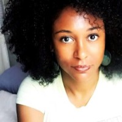
Traci A. Curry (co-)Filmmaker, panelist · 2021
A
- David AaronFilm subject · 2019

 Shirley AbrahamPanelist · 2021
Shirley AbrahamPanelist · 2021- CLOSING NIGHT: AcceptedFilmmaker · 2021
- Sasha Joelle AchilliFilmmaker, panelist · 2018
 Elliot AckermanModerator · 2 editions, 2022–2023
Elliot AckermanModerator · 2 editions, 2022–2023- Marika AdairFestival team · 2019

 Alan AdelsonPanelist · 2021
Alan AdelsonPanelist · 2021 Shakiba AdilFilmmaker · 2026
Shakiba AdilFilmmaker · 2026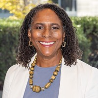
Lynne AdrineModerator · 2024 Pegah AhangaraniFilmmaker · 2026
Pegah AhangaraniFilmmaker · 2026- Ibrahim Snoopy AhmadFilmmaker, panelist · 2025
- Karim AhmadPanelist · 2021
 Timeea Mohamed AhmedPanelist, filmmaker · 2025
Timeea Mohamed AhmedPanelist, filmmaker · 2025 Sparsh AhujaPanelist · 2021
Sparsh AhujaPanelist · 2021- Roger AilesFilm subject · 2018
- Serena AjbaniPanelist · 2019
 Henry AjderPanelist · 2021
Henry AjderPanelist · 2021

- Maite AlberdiFilmmaker · 2020

 Rawia AlhagPanelist, filmmaker · 2025
Rawia AlhagPanelist, filmmaker · 2025- Simon AliFilm subject · 2024
- Lisa AllenFestival team · 2018

 Macky AlstonFilmmaker, panelist · 2024
Macky AlstonFilmmaker, panelist · 2024 Joshua AltmanFilmmaker · 2021
Joshua AltmanFilmmaker · 2021 Nina AlvarezPanelist · 3 editions, 2021–2026
Nina AlvarezPanelist · 3 editions, 2021–2026- Anne AlverguePanelist · 2019
- Karim AmerPanelist · 2019
- Anas Aremeyaw AnasPanelist · 2017
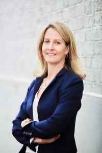
Jenny Anderson2026 Tetiana Anderson2021
Tetiana Anderson2021
- Sarah AnthonyFilmmaker · 2019

 Gerad ArgerosFilmmaker, film subject, panelist · 2024
Gerad ArgerosFilmmaker, film subject, panelist · 2024- Lisa ArmstrongModerator · 2016

 Debra ArokoPanelist, filmmaker · 2024
Debra ArokoPanelist, filmmaker · 2024 Corey Devon ArthurPanelist, filmmaker · 2025
Corey Devon ArthurPanelist, filmmaker · 2025
 Joy AshPanelist, filmmaker · 2025
Joy AshPanelist, filmmaker · 2025- Elizabeth AshwellFestival team · 2015
- Julian AssangeFilm subject · 2025
 Craig AtkinsonPanelist · 2016
Craig AtkinsonPanelist · 2016- Reuben AtlasFilmmaker · 2016
- Gemma AtwalFilmmaker · 2018


 Violeta AyalaFilmmaker, panelist · 2 editions, 2017–2021
Violeta AyalaFilmmaker, panelist · 2 editions, 2017–2021
B
 Wonjung BaeModerator · 2025
Wonjung BaeModerator · 2025- Ramin BahraniFilmmaker · 2023

 Madeleine BairPanelist · 2021
Madeleine BairPanelist · 2021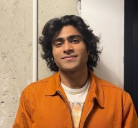
Karan BalajiFestival team · 2022
 Victoria BaranetskyPanelist · 2021
Victoria BaranetskyPanelist · 2021 César Martínez BarbaFilmmaker · 2021
César Martínez BarbaFilmmaker · 2021- Sara BargerPanelist · 2019
- Martin BaronPanelist · 2015
 Lawrence BartleyPanelist · 2021
Lawrence BartleyPanelist · 2021
- Lindsay BaxterFestival team · 2019
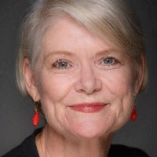
Pat Beall2021
- John BederFilmmaker · 2024
- Laura BeilPanelist · 2019
- Leah BeilhartFestival team · 2016
 Alicia BellPanelist · 2 editions, 2020–2021
Alicia BellPanelist · 2 editions, 2020–2021
- Jeff BemissFilmmaker · 2020
- Richard Ben-VenistePanelist, film subject · 2018
 Katie BennerPanelist · 2021
Katie BennerPanelist · 2021- Brian Bennett2021
 Opal Hope BennettPanelist · 2021
Opal Hope BennettPanelist · 2021 Sam BensteadFilmmaker, panelist · 2026
Sam BensteadFilmmaker, panelist · 2026
- Carl BernsteinFilm subject · 2018
- Jake BernsteinPanelist · 2016
- Mike BerryFilm subject · 2024
 Bonnie BertramPanelist, filmmaker · 2026
Bonnie BertramPanelist, filmmaker · 2026
- Kathryn BigelowFilmmaker · 2015

 Ben BlankenshipPanelist · 2024
Ben BlankenshipPanelist · 2024- Tom BlantonPanelist · 2015
 Doug BlockPanelist · 2026
Doug BlockPanelist · 2026- Alexis BloomFilmmaker, panelist · 2018
- Laura BlumenfeldModerator · 2 editions, 2018–2024

 Sarah BlustainPanelist · 2021
Sarah BlustainPanelist · 2021- Alexandria BombachFilmmaker · 2018
- Lou BoppFilm subject · 2025

- David BottiFilmmaker · 2021
- Assia BoundaouiPanelist, filmmaker · 2 editions, 2017–2018
- Jon BowermasterFilmmaker · 2018
 Maggie BowmanPanelist · 2021
Maggie BowmanPanelist · 2021
 Te Shima BrennenPanelist · 2022
Te Shima BrennenPanelist · 2022- Suzette Brewer2019
- Jennilie BrewsterPanelist · 2021
 Jimmie Briggs2023
Jimmie Briggs2023- Mariana BritoFestival team · 2 editions, 2015–2016
- Robin BronkFestival team · 2015
 Yoni BrookPanelist · 2021
Yoni BrookPanelist · 2021 Andrew H. BrownFilmmaker · 2026
Andrew H. BrownFilmmaker · 2026 Kenneth BrownPanelist · 2021
Kenneth BrownPanelist · 2021 Natalie Bullock BrownPanelist, moderator · 6 editions, 2019–2026Documentary Accountability Working Group
Natalie Bullock BrownPanelist, moderator · 6 editions, 2019–2026Documentary Accountability Working Group
- Mary Ann BrownlowFestival team · 2015

 Mads BrüggerPanelist, filmmaker · 2025
Mads BrüggerPanelist, filmmaker · 2025- Sabrina BuchwalterPanelist · 2015
- Nancy BuirskiFilmmaker · 2017
 Caitlin Mae BurkePanelist · 2021
Caitlin Mae BurkePanelist · 2021
 James BurnsFilmmaker · 2021
James BurnsFilmmaker · 2021- Brandon ButlerPanelist · 2024
C
 Lyric CabralPanelist, filmmaker · 3 editions, 2015–2017
Lyric CabralPanelist, filmmaker · 3 editions, 2015–2017
- Garance Le CaisnePanelist · 2023
 Paola CalvoFilmmaker · 2021
Paola CalvoFilmmaker · 2021- Byron CampbellFestival team · 2019
- Jeffery CampbellFilm subject · 2025
 Gabriella CanalPanelist · 2021
Gabriella CanalPanelist · 2021
- Teresa CaranteFilmmaker · 2024
 Lynn D. CarrilloPanelist · 2021
Lynn D. CarrilloPanelist · 2021- E. Jean CarrollFilm subject · 2025
- Vivian CarrollFestival team · 2018
- Louise CarronPanelist · 2021
 Michael CascioPanelist · 2021
Michael CascioPanelist · 2021 Michael CaseyPanelist · 2021
Michael CaseyPanelist · 2021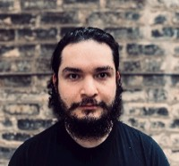
- John ChambersFestival team · 2023
 Katherine Fehr ChandlerPanelist · 2021
Katherine Fehr ChandlerPanelist · 2021- Ti-Hua ChangPanelist · 2016
- Caty Borum ChattooModerator, panelist · 2 editions, 2015–2017School of Communication, American University
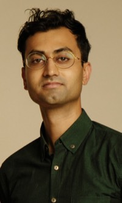
Naveen Chaubal2024
- Welcome to ChechnyaFilmmaker · 2020

 Carolyn ChenFestival team · 2022
Carolyn ChenFestival team · 2022- Dan ChenPanelist · 2021
- Weixi ChenFilmmaker · 2020
- Erika CheungPanelist · 2019
 Farai ChideyaPanelist · 2021
Farai ChideyaPanelist · 2021- Sonya ChildressPanelist · 2 editions, 2020–2021
 Jimmy ChinPanelist · 2021
Jimmy ChinPanelist · 2021 Sarah ChoiPanelist · 2021
Sarah ChoiPanelist · 2021- Seung-ho ChoiPanelist · 2021
 Ezra Chowaiki2026
Ezra Chowaiki2026 Costas ChristPanelist, journalists behind the film · 2025
Costas ChristPanelist, journalists behind the film · 2025 James ChristensonFilmmaker · 2021
James ChristensonFilmmaker · 2021 Nichole ChristianPanelist · 2026
Nichole ChristianPanelist · 2026- Tj CicheckiFestival team · 2016
 Radu CiorniciucPanelist, filmmaker · 2025
Radu CiorniciucPanelist, filmmaker · 2025 Katerina CizekPanelist · 2 editions, 2017–2021
Katerina CizekPanelist · 2 editions, 2017–2021
- Alex ClarkPanelist · 2023

 Thomas ClementPanelist, filmmaker · 2 editions, 2024–2026
Thomas ClementPanelist, filmmaker · 2 editions, 2024–2026
 Bonnie R. CohenFestival team · 2 editions, 2024–2025
Bonnie R. CohenFestival team · 2 editions, 2024–2025
- Jordan CohenFestival team · 2017


- Will CohenFilmmaker · 2018
 Erika CohnFilmmaker, panelist · 3 editions, 2020–2024
Erika CohnFilmmaker, panelist · 3 editions, 2020–2024- Ernest ColeFilm subject · 2024
 Caitlan ColemanPanelist · 2021
Caitlan ColemanPanelist · 2021 Vernal ColemanPanelist · 2021
Vernal ColemanPanelist · 2021- Film CollectiveFestival team · 2025
- The Myanmar Film CollectiveFilmmaker · 2022
- Workhorse CollectiveFestival team · 2 editions, 2024–2025

 Sara ColmPanelist · 2015
Sara ColmPanelist · 2015- ‘Til Kingdom ComeFilmmaker · 2020
 Sophie ComptonFilmmaker, panelist · 2023
Sophie ComptonFilmmaker, panelist · 2023 Ben Conarck2026
Ben Conarck2026- Luisa ConlonFilmmaker · 2018

 Billy CorbenFilmmaker, panelist · 2 editions, 2024–2025
Billy CorbenFilmmaker, panelist · 2 editions, 2024–2025
 Sheila S. CoronelPanelist · 2021
Sheila S. CoronelPanelist · 2021- The New CorporationFilmmaker · 2020
- Heather CourtneyPanelist, filmmaker · 2 editions, 2017–2018
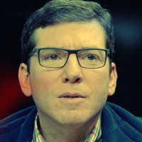
David CowanPanelist · 2021 Gabriela CowperthwaiteFilmmaker · 2022
Gabriela CowperthwaiteFilmmaker · 2022 Philip CoxFilmmaker · 2025
Philip CoxFilmmaker · 2025
 Letrell CrittendenPanelist · 2021
Letrell CrittendenPanelist · 2021
- Michael CrossettFestival team · 2023

D
- Nicole D'ArcangeloFestival team · 2025
 Andreas DalsgaardFilmmaker, panelist · 2026
Andreas DalsgaardFilmmaker, panelist · 2026 Jesse DamianiPanelist · 2021
Jesse DamianiPanelist · 2021- Kyra DarntonPanelist · 2026

- Fran DauthFestival team · 2015

 Josh DavidsburgPanelist · 2025
Josh DavidsburgPanelist · 2025- Kief DavidsonFilmmaker · 2016

- Chad DavisFestival team · 2 editions, 2017–2018
 Kate DavisFilmmaker · 2023
Kate DavisFilmmaker · 2023- Kevin DavisFestival team · 2015
 Leslye DavisPanelist · 2 editions, 2020–2021
Leslye DavisPanelist · 2 editions, 2020–2021- Marcia DavisModerator, panelist · 2018
- Stella DawsonFestival team · 2022
- John DeanFilm subject · 2018
- Sherry Simpson DeanPanelist · 2021
- Paula DeenFilm subject · 2025

 Lewam DejenFestival team · 2015
Lewam DejenFestival team · 2015
- Talal DerkiFilmmaker · 2018
 Rajvi DesaiPanelist · 2022
Rajvi DesaiPanelist · 2022- MJ DesharnaisFilmmaker · 2026


- Ramona DiazFilmmaker, panelist · 2 editions, 2019–2020
- Kirby DickPanelist · 2015
 Kaya Moon DillonFilmmaker · 2024
Kaya Moon DillonFilmmaker · 2024- In Event of Moon DisasterFilmmaker · 2020
 Lance DixonPanelist · 2021
Lance DixonPanelist · 2021
- Rodrigo DorfmanPanelist · 2019
- Ken DornsteinPanelist · 2016
- Maureen DowneyFilm subject · 2016

 Matt DrangePanelist · 2026
Matt DrangePanelist · 2026- Jerod DraperFilm subject · 2024
- Joshua DratelPanelist · 2015
 Juliane DressnerFilmmaker · 2026
Juliane DressnerFilmmaker · 2026
- Barbara Corbellini DuarteFilmmaker · 2022
 Benjamin DuchekModerator · 2025
Benjamin DuchekModerator · 2025- Thomas DurkinPanelist · 2 editions, 2020–2021
- Carol DysingerFilmmaker, panelist · 2023
E
 Pete EarleyPanelist · 2016
Pete EarleyPanelist · 2016- Katherine EbanPanelist · 2020


- Ezra EdelmanPanelist · 2016
 Anthony EdwardsFilmmaker, panelist · 2025
Anthony EdwardsFilmmaker, panelist · 2025
- Catrin EinhornPanelist · 2020
- Orlando von EinsiedelFilmmaker · 2019
 Jesse EinsteinPanelist · 2021
Jesse EinsteinPanelist · 2021- Julien ElieFilmmaker · 2019

- Rudolf ElmerFilm subject · 2016
 Peter EngelPanelist · 2025
Peter EngelPanelist · 2025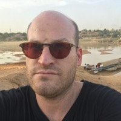
Brian EpsteinFilmmaker · 2021- Edward Jay EpsteinFilm subject · 2017
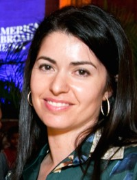
 Antonio Méndez EsparzaFilmmaker, panelist · 2021
Antonio Méndez EsparzaFilmmaker, panelist · 2021- Deborah EsquenaziPanelist · 2017
- Alisia EssigPanelist · 2015
- Stephanie EtiennePanelist, filmmaker · 2025

- Peter EversollPanelist · 2019

- Heidi EwingFilmmaker · 2017
F
 Shoaib FakhruddinPanelist · 2021
Shoaib FakhruddinPanelist · 2021- Foluso FakoredeFilm subject · 2025
 Rachel FalconeFilmmaker, panelist · 2024
Rachel FalconeFilmmaker, panelist · 2024- Nima FatemiWorkshop leader · 2018
- Feras FayyadFilmmaker · 2019
- Michael FearonPanelist · 2021
- Eric FederPanelist, workshop leader · 2 editions, 2023–2025Reporters Committee for Freedom of the Press

- Andrew FeinsteinPanelist · 2015
 Violet Du FengPanelist · 2021
Violet Du FengPanelist · 2021- Chris FentonPanelist · 2020
- Justin FentonPanelist · 2023
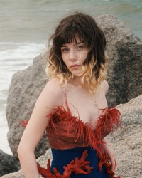

 Susan Ferriss2022
Susan Ferriss2022 Cheryl FieldsPanelist · 2026
Cheryl FieldsPanelist · 2026

- Together FilmsFestival team · 2024
 Arjun FischerFilmmaker · 2026
Arjun FischerFilmmaker · 2026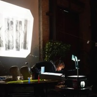
- Isaac Stone FishPanelist · 2020
 Luchina FisherFilmmaker · 2023
Luchina FisherFilmmaker · 2023- Arden FitzpatrickFestival team · 2019
- Terry FitzpatrickPanelist · 2015
- SPOTLIGHT: FleeFilmmaker · 2021
 Michael Fletcher2021
Michael Fletcher2021- Kathleen FlynnPanelist · 2018
- Sharon FlynnFestival team · 2018
- Bryan FogelPanelist · 2017
- Diane FoleyPanelist · 2020
- Gerald FoosFilm subject · 2017
 Patrick ForbesFilmmaker · 2023
Patrick ForbesFilmmaker · 2023- Yance FordPanelist · 2018
- Jennifer FordePanelist · 2019
 Darren FosterFilmmaker · 2022
Darren FosterFilmmaker · 2022- Hammond Taylor FosterFestival team · 2015
 Taylor FosterFestival team · 2 editions, 2017–2018
Taylor FosterFestival team · 2 editions, 2017–2018- Eleanor Bell FoxWorkshop leader · 2017
 Marisa FoxPanelist, filmmaker · 2026
Marisa FoxPanelist, filmmaker · 2026- George FramptonPanelist · 2018
- Lilian FranckFilmmaker · 2017
 Theodore FrankPanelist, festival team, workshop leader · 7 editions, 2017–2025Arnold & Porter Kaye Scholer (retired partner)
Theodore FrankPanelist, festival team, workshop leader · 7 editions, 2017–2025Arnold & Porter Kaye Scholer (retired partner)
- Andrew FredericksFilmmaker · 2021
 Daniel FreedPanelist, filmmaker · 2024
Daniel FreedPanelist, filmmaker · 2024
- Eric FryerFestival team · 2024
G

- Veronika GajerFestival team · 2015
 Cynthia GalliPanelist · 2021
Cynthia GalliPanelist · 2021- Geeta GandbhirPanelist · 2021
- Abe GarciaFestival team · 2016
 Lana GarlandFestival team, moderator · 2 editions, 2023–2024
Lana GarlandFestival team, moderator · 2 editions, 2023–2024 Jen GatienFilmmaker, panelist · 2024
Jen GatienFilmmaker, panelist · 2024 Atul GawandePanelist, filmmaker · 2025
Atul GawandePanelist, filmmaker · 2025 Alexandra GenovaFilmmaker · 2026
Alexandra GenovaFilmmaker · 2026
- Alex GibneyFilmmaker, panelist · 3 editions, 2015–2019
- Douglas GillisonPanelist · 2015
 Robin GivhanModerator · 2025
Robin GivhanModerator · 2025 Joshua GlickPanelist · 2021
Joshua GlickPanelist · 2021- Alexandria GoddardFilm subject, panelist · 2018

 Jon-Sesrie GoffPanelist · 2 editions, 2017–2021Smithsonian National Museum of African American History and Culture
Jon-Sesrie GoffPanelist · 2 editions, 2017–2021Smithsonian National Museum of African American History and Culture Roopa GogineniFilmmaker, panelist · 2023
Roopa GogineniFilmmaker, panelist · 2023
 Lori E. GoldFestival team · 2015
Lori E. GoldFestival team · 2015 Rick GoldsmithFilmmaker · 2023
Rick GoldsmithFilmmaker · 2023- Milan M.A. GonzalesFilmmaker · 2023
- Everardo GonzálezFilmmaker, panelist · 2017
- Mirel GonzálezFestival team · 2019
 Sabrina Schmidt GordonPanelist · 2021
Sabrina Schmidt GordonPanelist · 2021 Nicole GormleyFilmmaker · 2024
Nicole GormleyFilmmaker · 2024 Yaakov GottliebPanelist · 2022
Yaakov GottliebPanelist · 2022- Jordan GoudreauFilm subject · 2024
- Tamara GouldPanelist · 2016
- Jennifer GradeckiPanelist · 2018
 Mark GrahamPanelist · 2026
Mark GrahamPanelist · 2026 Galassia GrassettoFilmmaker · 2026
Galassia GrassettoFilmmaker · 2026- Coley GrayFestival team · 2023
 Dana GreenPanelist · 2021
Dana GreenPanelist · 2021 Erica GreenPanelist · 2021
Erica GreenPanelist · 2021- Lindsay Green-BarberPanelist · 2020
 Ronnie GreeneModerator · 2 editions, 2024–2025
Ronnie GreeneModerator · 2 editions, 2024–2025

- Daniel GrinbergPanelist · 2018Center for Media at Risk, Annenberg School for Communication, University of Pennsylvania


 David E. GuggenheimModerator · 2025
David E. GuggenheimModerator · 2025 Lucas GuilkeyFilmmaker, panelist · 2024
Lucas GuilkeyFilmmaker, panelist · 2024 Nicole GuillenPanelist · 2022
Nicole GuillenPanelist · 2022 Eileen GuoPanelist · 2021
Eileen GuoPanelist · 2021 Robert GutierrezPanelist · 2023
Robert GutierrezPanelist · 2023
H
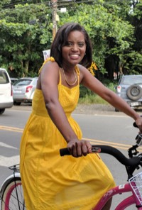
 Peter HaggertFestival team · 2 editions, 2024–2025
Peter HaggertFestival team · 2 editions, 2024–2025- Scott HahnPanelist · 2015
 Princess HairstonPanelist · 2023
Princess HairstonPanelist · 2023- Miranda Rose HallWorkshop leader · 2023
 Nathan HalversonFilm subject, panelist · 2022
Nathan HalversonFilm subject, panelist · 2022- Johanna HamiltonFilmmaker, panelist, workshop leader · 2 editions, 2015–2018
 Kathryn Karaoglu HamiltonPanelist · 2021
Kathryn Karaoglu HamiltonPanelist · 2021- Reuben HamlynFilmmaker · 2023
 Christalyn HamptonFilmmaker · 2026
Christalyn HamptonFilmmaker · 2026- Gabby HannaFestival team · 2015

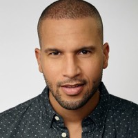
- Jessica HargraveFilmmaker · 2020
 James HarkinPanelist · 2021
James HarkinPanelist · 2021- Grace HarperFilmmaker · 2022
 Kanika HarrisFilmmaker, panelist · 2025
Kanika HarrisFilmmaker, panelist · 2025- Steve HartmanFilm subject · 2025
 Rahi HasanPanelist · 2021
Rahi HasanPanelist · 2021
- Sally HaydenPanelist · 2019
- Cassie HaynesPanelist · 2021
- Shawn HazelettFilmmaker, panelist · 2023
- Lynn Hearst2025
 Dana HedgpethModerator · 2024
Dana HedgpethModerator · 2024
 Matthew HeinemanFilmmaker, panelist · 3 editions, 2015–2022
Matthew HeinemanFilmmaker, panelist · 3 editions, 2015–2022- Mark HelenowskiFilmmaker · 2023
- Judith HelfandPanelist, workshop leader, festival team · 2 editions, 2021–2022Chicken & Egg Pictures
- Robin HellerFestival team · 2017

- They’re HereFilmmaker · 2026
- Kevin HermeningFilm subject · 2019
 Robert HernandezPanelist · 2021
Robert HernandezPanelist · 2021 Elizabeth HerreraPanelist · 2021
Elizabeth HerreraPanelist · 2021 Seymour HershFilm subject, panelist · 2025
Seymour HershFilm subject, panelist · 2025 David HerszenhornModerator · 2023
David HerszenhornModerator · 2023


- Cierra HintonPanelist · 2021
 Elina HirvonenFilmmaker · 2026
Elina HirvonenFilmmaker · 2026
 Kimberly HodgesFestival team · 2025
Kimberly HodgesFestival team · 2025
 Harlo HolmesWorkshop leader, panelist, moderator · 5 editions, 2015–2026Freedom of the Press Foundation
Harlo HolmesWorkshop leader, panelist, moderator · 5 editions, 2015–2026Freedom of the Press Foundation

- Rose HorowitzFestival team · 2019
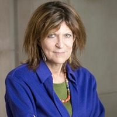

- Alanis HowardFestival team · 2025
- Erika HowardPanelist · 2020
 William HowellPanelist, filmmaker · 2025
William HowellPanelist, filmmaker · 2025- Johnny HoworthFilmmaker, panelist · 2024
- Jennifer HuangPanelist · 2019
 Leyi HuangPanelist · 2023
Leyi HuangPanelist · 2023 Brendan Hubbard2024
Brendan Hubbard2024- Brent HuffmanFilmmaker · 2022

- Lily HughesFestival team · 2015
- Pádraig HughesPanelist · 2021
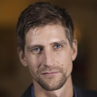
Axel Gordh HumlesjöPanelist · 2021
- Mark Lee HunterPanelist · 2020


I
 Daisy IfamaFilmmaker · 2021
Daisy IfamaFilmmaker · 2021 Matthew IlesPanelist · 2021
Matthew IlesPanelist · 2021- Zach IngrasciFilmmaker · 2023

- Wade IshimotoFilm subject · 2019

J
 Kristi JacobsonFilmmaker, panelist · 2016
Kristi JacobsonFilmmaker, panelist · 2016 Molly JahnFilm subject · 2022
Molly JahnFilm subject · 2022 Patrick Jaicomo2026
Patrick Jaicomo2026- Steve JamesFilmmaker · 2016
 Tracy JanModerator · 2023
Tracy JanModerator · 2023- Eugene JareckiPanelist, filmmaker · 2025
 Patrick JasimFilmmaker · 2021
Patrick JasimFilmmaker · 2021- Andrew JeffreyFestival team · 2015
- Will JenkinsModerator · 4 editions, 2015–2019
 Sarah JenksFilmmaker · 2021
Sarah JenksFilmmaker · 2021

- Olivia JimenezFestival team · 2 editions, 2023–2024
 Claritza JiménezFestival team · 2015
Claritza JiménezFestival team · 2015 Abraham JoffePanelist, filmmaker · 2025
Abraham JoffePanelist, filmmaker · 2025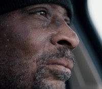
Dewayne “Lee” JohnsonFilm subject · 2022 Jeffrey JohnsonFilmmaker · 2022
Jeffrey JohnsonFilmmaker · 2022- Kirsten JohnsonPanelist · 2 editions, 2015–2016
 Holly JonasPanelist · 2026
Holly JonasPanelist · 2026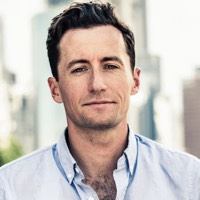
Conall JonesPanelist, filmmaker · 2025
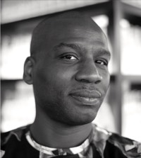
George Kevin JordanPanelist · 2026 Linda JuePanelist · 2021
Linda JuePanelist · 2021- Christoph Jörg2026
K
 Gabriel KahnPanelist · 2021
Gabriel KahnPanelist · 2021- Brittany KaiserPanelist · 2020
- Myles KaneFilmmaker · 2017
 Ines Hofmann KannaWorkshop leader, panelist · 2 editions, 2017–2021
Ines Hofmann KannaWorkshop leader, panelist · 2 editions, 2017–2021 Leen KaradshehPanelist · 2022
Leen KaradshehPanelist · 2022
 Afraim KatzirFestival team · 2023
Afraim KatzirFestival team · 2023- Ross KauffmanPanelist · 2015
 Crystal KayizaPanelist, filmmaker · 2025
Crystal KayizaPanelist, filmmaker · 2025 Christine KecherPanelist · 2021
Christine KecherPanelist · 2021- Patrick Radden KeefePanelist · 2018
 Chelsea KellyWorkshop leader · 2025
Chelsea KellyWorkshop leader · 2025 Sonia KennebeckPanelist, filmmaker, workshop leader · 3 editions, 2017–2021
Sonia KennebeckPanelist, filmmaker, workshop leader · 3 editions, 2017–2021


- My Brother’s KillerFilmmaker · 2026
 Simon KilmurryModerator, panelist, filmmaker · 3 editions, 2016–2025International Documentary Association
Simon KilmurryModerator, panelist, filmmaker · 3 editions, 2016–2025International Documentary Association In Jeong KimPanelist · 2022
In Jeong KimPanelist · 2022
- Suki KimPanelist · 2017
- Noah KincadePanelist · 2026
 Vanessa KjeldsenFilmmaker · 2024
Vanessa KjeldsenFilmmaker · 2024

- Brian KnappenbergerPanelist · 2 editions, 2015–2017
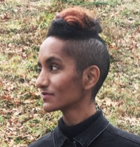

- Minna Knus-GalánPanelist · 2021
 Beth Kojima2026
Beth Kojima2026 Lance KooncePanelist · 2021
Lance KooncePanelist · 2021- Barbara KoppleFilmmaker · 2019
 Ashley KostialPanelist · 2026
Ashley KostialPanelist · 2026 Yvonne Ashley KouadjoPanelist · 2021
Yvonne Ashley KouadjoPanelist · 2021- Josh KouryFilmmaker · 2017

- Dan KraussPanelist · 2015

- Carolina KroonFestival team · 2 editions, 2018–2019
- Travis Hare, KRPRFestival team · 2024
- Mantas KvedaravičiusFilmmaker · 2022
- Erin Semine KökdilFilmmaker · 2021
L
- Richard LadkaniFilmmaker · 2016
- Brent Lambert-ZaffinoModerator, festival team · 2 editions, 2023–2024
- Penny LaneFilmmaker, workshop leader · 2 editions, 2016–2018
 Elizabeth Foy LarsenJournalists behind the film, panelist · 2025
Elizabeth Foy LarsenJournalists behind the film, panelist · 2025 Rachel LearsPanelist · 2021
Rachel LearsPanelist · 2021 Susan LeathPanelist · 2021
Susan LeathPanelist · 2021- Quincy LedbetterPanelist · 2021
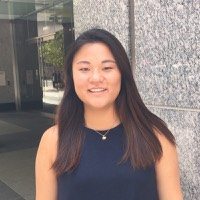
Christina LeeFestival team · 2016
 Jennifer 8. LeePanelist · 2021
Jennifer 8. LeePanelist · 2021 Sally LehrmanPanelist · 2024
Sally LehrmanPanelist · 2024- David LeLoupFilmmaker, panelist · 2016
 Gerry LeonardPanelist · 2021
Gerry LeonardPanelist · 2021 Stephanie LeppPanelist · 2021
Stephanie LeppPanelist · 2021 Chris LettPanelist · 2023
Chris LettPanelist · 2023- Joshua LevinFestival team · 2015
 Marc Levin2021
Marc Levin2021- Audrey LevineFestival team · 2015
 Beth LevisonFilmmaker, panelist · 2021
Beth LevisonFilmmaker, panelist · 2021 Jarrett LeyPanelist · 2026
Jarrett LeyPanelist · 2026- Moruomi LiFestival team · 2017
 Sig LibowitzModerator, panelist, workshop leader · 3 editions, 2024–2026JHU AAP Graduate Film and Media Program
Sig LibowitzModerator, panelist, workshop leader · 3 editions, 2024–2026JHU AAP Graduate Film and Media Program- Eric LichtblauPanelist · 2015
- Rebecca LichtenfeldPanelist · 2017

 Matthieu LietaertFilmmaker · 2023
Matthieu LietaertFilmmaker · 2023 Annukka Lilja2026
Annukka Lilja2026- Boyoung LimPanelist · 2021
 Esther LimPanelist, filmmaker · 2025
Esther LimPanelist, filmmaker · 2025- Loira LimbalFilmmaker · 2020
- John LimbertFilm subject · 2019
- Linnan LinFestival team · 2018

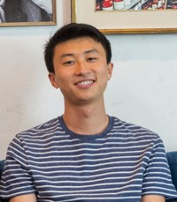
Bing LiuFilmmaker · 2021 Libby LiuPanelist · 2026
Libby LiuPanelist · 2026 Elizabeth LoFilmmaker, panelist · 2 editions, 2021–2024
Elizabeth LoFilmmaker, panelist · 2 editions, 2021–2024 Ben LoetermanPanelist, filmmaker · 2 editions, 2024–2025
Ben LoetermanPanelist, filmmaker · 2 editions, 2024–2025
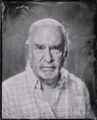
- James LongleyPanelist, filmmaker · 2018
- Luke LorentzenPanelist · 2019

 Malkia LydiaModerator, panelist · 3 editions, 2024–2026
Malkia LydiaModerator, panelist · 3 editions, 2024–2026- Shola LynchWorkshop leader · 2018Schomburg Center for Research in Black Culture, The New York Public Library
M
- Myra MacPhersonPanelist · 2016
- Robert MaguirePanelist · 2018
- Stephen MaingPanelist · 2018
 Marta Rodriguez MaleckFilmmaker · 2021
Marta Rodriguez MaleckFilmmaker · 2021 Stéphane MalterreFilmmaker · 2023
Stéphane MalterreFilmmaker · 2023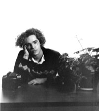
Isaac George Crown ManesisFilmmaker · 2023 Zac ManuelFilmmaker · 2021
Zac ManuelFilmmaker · 2021 Darya MarchenkovaPanelist · 2021
Darya MarchenkovaPanelist · 2021- Paul MarengoFestival team · 2 editions, 2015–2018
- Amy MarquisPanelist · 2019
- Julian MarshallPanelist · 2021


 Evan MascagniPanelist · 2023
Evan MascagniPanelist · 2023 Rachel MasonPanelist · 2026
Rachel MasonPanelist · 2026 Judith MatloffPanelist, workshop leader · 3 editions, 2017–2024Columbia Graduate School of Journalism
Judith MatloffPanelist, workshop leader · 3 editions, 2017–2024Columbia Graduate School of Journalism
 Eric MatthiesFilmmaker, moderator, panelist · 3 editions, 2017–2021
Eric MatthiesFilmmaker, moderator, panelist · 3 editions, 2017–2021 Daniel MayedaPanelist · 2021
Daniel MayedaPanelist · 2021 Nicki MayoModerator, panelist · 2 editions, 2023–2024
Nicki MayoModerator, panelist · 2 editions, 2023–2024
- Tom McCarthyFilmmaker · 2015


- Brendan McInerneyPanelist · 2022
 James McLaughlinPanelist · 2026
James McLaughlinPanelist · 2026- Doyle McManusPanelist · 2018
 Tom MeagherPanelist · 2021
Tom MeagherPanelist · 2021- Felicia E. MebaneFestival team · 2015
- Andrea MeditchPanelist · 2016
- Betty MedsgerPanelist · 2015
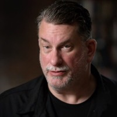
James Gordon MeekFilmmaker, panelist · 2021- Ivy MeeropolFilmmaker, panelist · 2 editions, 2019–2025
 Swapneel MehtaPanelist · 2026
Swapneel MehtaPanelist · 2026
- Adam Mellion2026
 Dan MericaModerator · 2024
Dan MericaModerator · 2024- Regan MertzFestival team · 2022

- Michael MetrinkoFilm subject · 2019
- Julio MeyerFestival team · 2016
- Samantha MichaelsJournalists behind the film · 2023
 Emma D. MillerPanelist, filmmaker · 2024
Emma D. MillerPanelist, filmmaker · 2024- Eneshal MillerFestival team · 2015
 Hanna Lane MillerPanelist, filmmaker · 2 editions, 2018–2025
Hanna Lane MillerPanelist, filmmaker · 2 editions, 2018–2025- Mark Adam MillerFilmmaker · 2022
- James MillwardModerator · 2023
- Claudia MilnePanelist · 2018
 Samuel-Ali MirpoorianFilmmaker · 2024
Samuel-Ali MirpoorianFilmmaker · 2024- Israel MirskyFestival team · 2015


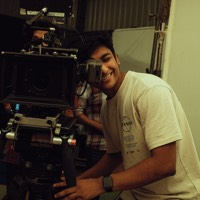
Ragheeb MoazzemFestival team · 2025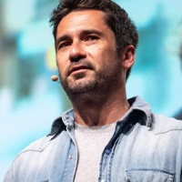
Casey Mock2026 Matthew ModineFilmmaker, panelist · 2024
Matthew ModineFilmmaker, panelist · 2024 Andres “Jay” MolinaPanelist · 2021
Andres “Jay” MolinaPanelist · 2021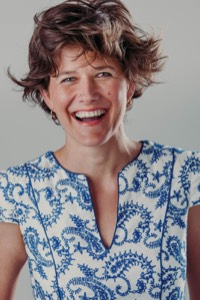
Hajnal Molnar-SzakacsPanelist · 2021- Lisa MolomotFilmmaker · 2020
- Cara MonesFilmmaker · 2023
- Candace MontagueModerator · 2025

- Alexander A. MoraFilmmaker · 2019
 Jenni MorelloPanelist · 2021
Jenni MorelloPanelist · 2021- Andrew MorganFilmmaker · 2015
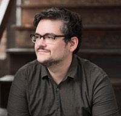
Wesley Morgan2021- Bill MorrisonFilmmaker · 2023
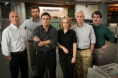
 Merete MuellerFilmmaker · 2022
Merete MuellerFilmmaker · 2022- Tom MuellerModerator · 2019
 Lizzie MulveyFilmmaker · 2021
Lizzie MulveyFilmmaker · 2021- Smriti MundhraFilmmaker · 2024
- They Won’t Call It MurderFilmmaker · 2021
 Beth MurphyPanelist · 2021
Beth MurphyPanelist · 2021
 Teresa MurphyPanelist · 2024
Teresa MurphyPanelist · 2024- Elisa Lees MuñozPanelist · 2020
 JoeBill MuñozFilmmaker, panelist · 2024
JoeBill MuñozFilmmaker, panelist · 2024
N
- Rovina NaboiFilm subject · 2025
 Ellen NakashimaModerator · 2025
Ellen NakashimaModerator · 2025- Yuima NakazatoFilm subject, panelist · 2024
- Alexander NanauFilmmaker · 2020

- Diana NeilleFilmmaker · 2020
 Jennifer NelsonPanelist, workshop leader · 4 editions, 2022–2026Reporters Committee for Freedom of the Press
Jennifer NelsonPanelist, workshop leader · 4 editions, 2022–2026Reporters Committee for Freedom of the Press Kelsey Nicole NelsonModerator · 2025
Kelsey Nicole NelsonModerator · 2025 Stanley NelsonFilmmaker, panelist · 2021
Stanley NelsonFilmmaker, panelist · 2021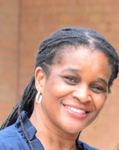
Lois NembhardPanelist · 2026 Alexis NeophytidesPanelist · 2021
Alexis NeophytidesPanelist · 2021- Marilyn NessPanelist · 2018
 Arionne Nettles2021
Arionne Nettles2021- Thor NeureiterPanelist · 2015

 Yvonne NgPanelist · 2026
Yvonne NgPanelist · 2026 Shal NgoFilmmaker · 2021
Shal NgoFilmmaker · 2021- Irma Alicia Velásquez NimatujPanelist · 2018


- Roshan Noorzai2026
 David NovackFilmmaker, panelist · 2023
David NovackFilmmaker, panelist · 2023
O
 Mark ObenhausFilmmaker, panelist · 2025
Mark ObenhausFilmmaker, panelist · 2025 Lynn OberlanderPanelist · 2021
Lynn OberlanderPanelist · 2021 Adebayo OkeowoPanelist · 2021
Adebayo OkeowoPanelist · 2021
- Hannah OlsonFilmmaker · 2020
- Jeff OrlowskiPanelist · 2020
 Eva OrnerFilmmaker · 2 editions, 2019–2021
Eva OrnerFilmmaker · 2 editions, 2019–2021- David OsitFilmmaker · 2020
 Molly O’BrienPanelist · 2021
Molly O’BrienPanelist · 2021- Kyle O’ConnorFestival team · 2018
- Amelia O’Rourke-OwensPanelist · 2026
 Sinéad O’SheaFilmmaker · 2022
Sinéad O’SheaFilmmaker · 2022
P
 Lauren PabstPanelist, moderator · 4 editions, 2019–2025The John D. and Catherine T. MacArthur Foundation
Lauren PabstPanelist, moderator · 4 editions, 2019–2025The John D. and Catherine T. MacArthur Foundation Diana PalaciosPanelist · 2021
Diana PalaciosPanelist · 2021- Francesca PanettaPanelist · 2015
 Juan PassarelliPanelist · 2025
Juan PassarelliPanelist · 2025 Karthik PatanjaliPanelist · 2021
Karthik PatanjaliPanelist · 2021- Kasha PatelModerator · 2022
- Nita PatelFilm subject · 2024
- Fred PeabodyFilmmaker · 2016

- Edward PeaseFestival team · 2025
 Raoul PeckPanelist, filmmaker · 2024
Raoul PeckPanelist, filmmaker · 2024 Enrique Pedráza-BoteroPanelist, filmmaker · 2025
Enrique Pedráza-BoteroPanelist, filmmaker · 2025- Connie PendletonPanelist · 2018
 Maggie Penman2026
Maggie Penman2026- LeeAnn PetersonFestival team · 2017
 Sierra PettengillFilmmaker · 2021
Sierra PettengillFilmmaker · 2021
- Nonny de la PeñaPanelist · 2015
- Sacha PfeifferPanelist · 2015
 Charlie PhillipsPanelist · 2021
Charlie PhillipsPanelist · 2021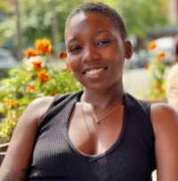
Kaila PhiloFestival team · 2023 Katrine PhilpFilmmaker · 2018
Katrine PhilpFilmmaker · 2018

 Amanda PikePanelist, filmmaker, moderator · 6 editions, 2019–2025The Center for Investigative Reporting
Amanda PikePanelist, filmmaker, moderator · 6 editions, 2019–2025The Center for Investigative Reporting
 Jenna PirogPanelist · 2021
Jenna PirogPanelist · 2021 Rajal PitrodaPanelist · 2024
Rajal PitrodaPanelist · 2024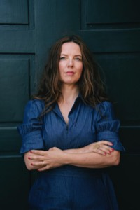
Sine PlambechFilmmaker · 2026 Charles PoeModerator · 2025
Charles PoeModerator · 2025 Laura PoitrasFilmmaker, panelist · 2 editions, 2025–2026
Laura PoitrasFilmmaker, panelist · 2 editions, 2025–2026 Nathalie PollackFestival team · 2016
Nathalie PollackFestival team · 2016- Sam PollardFilmmaker · 2020
- Vasily PolonskyFilm subject, panelist · 2022
- Hans PoolFilmmaker · 2019
- Richard PoplakFilmmaker · 2020
 Lindsay PoultonPanelist · 2021
Lindsay PoultonPanelist · 2021- Maxim PozdorovkinFilmmaker, panelist · 2018
- Anayansi PradoFilmmaker · 2018
 Michael PremoFilmmaker, panelist · 2024
Michael PremoFilmmaker, panelist · 2024 Jennifer PrestonPanelist · 2021
Jennifer PrestonPanelist · 2021 Juliana Schatz PrestonPanelist, filmmaker · 2 editions, 2019–2021
Juliana Schatz PrestonPanelist, filmmaker · 2 editions, 2019–2021
 Brett A. PulleyFestival team · 6 editions, 2017–2024
Brett A. PulleyFestival team · 6 editions, 2017–2024 Donna PurchaseFestival team · 2015
Donna PurchaseFestival team · 2015- Henry PurchaseFestival team · 2015

Q


R
- Andrea RabyPanelist · 2019
- Adam RackoffFilmmaker · 2024
- Jesselyn RadackPanelist · 3 editions, 2017–2025
- Gerald RafshoonFilm subject · 2019

- Bonnie RainesPanelist · 2015
- Megha RajagopalanPanelist · 2020
 Sandro RamaniPanelist, filmmaker · 2025
Sandro RamaniPanelist, filmmaker · 2025- Erika Gonzalez RamirezFilmmaker · 2023
- John Henry RamirezFilm subject · 2024
 Rachel RaneyFilmmaker, panelist · 2024
Rachel RaneyFilmmaker, panelist · 2024 Ingrid Raphaël2021
Ingrid Raphaël2021


- Jane Ray2017
- Peter RaymontFilmmaker · 2016
 Susanne ReberFestival team, panelist, workshop leader · 4 editions, 2018–2022E. W. Scripps Washington Bureau
Susanne ReberFestival team, panelist, workshop leader · 4 editions, 2018–2022E. W. Scripps Washington Bureau- Heidi ReinbergWorkshop leader · 2019
- Conway ReindersFestival team · 2 editions, 2016–2017
- What You’ll RememberFilmmaker · 2021
- CENTERPIECE: The RescueFilmmaker · 2021

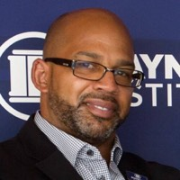
Martin G. ReynoldsPanelist · 2021
 Michael RezendesPanelist, moderator, workshop leader · 3 editions, 2015–2023
Michael RezendesPanelist, moderator, workshop leader · 3 editions, 2015–2023- Larissa RhodesPanelist · 2020
 Laurent RichardPanelist, workshop leader · 2 editions, 2018–2021
Laurent RichardPanelist, workshop leader · 2 editions, 2018–2021 Chanel RichardsonPanelist · 2026
Chanel RichardsonPanelist · 2026 Rachel Lauren Mueller · Anne Sundberg · Yoruba RichenFilmmaker, panelist · 2 editions, 2022–2026
Rachel Lauren Mueller · Anne Sundberg · Yoruba RichenFilmmaker, panelist · 2 editions, 2022–2026 Yoruba RichenFilmmaker, panelist · 3 editions, 2023–2026Newmark Graduate School of Journalism at CUNY
Yoruba RichenFilmmaker, panelist · 3 editions, 2023–2026Newmark Graduate School of Journalism at CUNY Jerry RisiusFilmmaker · 2021
Jerry RisiusFilmmaker · 2021- Isabelle Di RitaFestival team · 2019
- James Q. RobertsFilm subject · 2019
- Lacy Jane RobertsFilmmaker · 2018
 Alana RochaPanelist · 2026
Alana RochaPanelist · 2026 Mauricio Rodriguez-PonsFilmmaker · 2 editions, 2023–2025
Mauricio Rodriguez-PonsFilmmaker · 2 editions, 2023–2025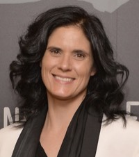
Sharon “Rocky” RoggioFilmmaker, panelist · 2023 Daniel RoherPanelist · 2022
Daniel RoherPanelist · 2022
 Claudia RomanoPanelist · 2021
Claudia RomanoPanelist · 2021 Talia RosenPanelist · 2021
Talia RosenPanelist · 2021- Kenneth RosenbergFilmmaker · 2019
- Gianfranco RosiFilmmaker · 2016
- Jerry RothwellFilmmaker · 2016
 Bonnie RowanPanelist · 2026
Bonnie RowanPanelist · 2026 Julian RubinsteinPanelist · 2023
Julian RubinsteinPanelist · 2023 Bernardo Ruiz2024
Bernardo Ruiz2024
S
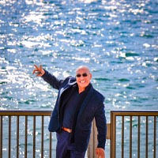
Michael Saavedra2024
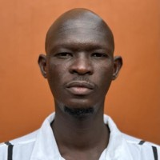
Anas SaeedPanelist, filmmaker · 2025 Marjan SafiniaPanelist · 2021
Marjan SafiniaPanelist · 2021 Kelli L. SagerPanelist · 2021
Kelli L. SagerPanelist · 2021 Nicole SalazarPanelist · 2021
Nicole SalazarPanelist · 2021 Ashley SalmanFilmmaker · 2024
Ashley SalmanFilmmaker · 2024- Claudio Sanchez2021


 Steve SapienzaPanelist · 4 editions, 2017–2025
Steve SapienzaPanelist · 4 editions, 2017–2025 Andy SarjahaniFilmmaker · 2 editions, 2023–2024
Andy SarjahaniFilmmaker · 2 editions, 2023–2024
 Jane SasseenPanelist · 2021
Jane SasseenPanelist · 2021

- Tonje Hessen ScheiFilmmaker · 2015
 Sasha SchellPanelist · 2026
Sasha SchellPanelist · 2026

- Johanna SchillerFestival team · 2019
 Ziv SchneiderPanelist · 2021
Ziv SchneiderPanelist · 2021 Jeremiah SchofieldPanelist · 2026
Jeremiah SchofieldPanelist · 2026- Tim SchwabPanelist · 2021
 Amy SchwartzModerator · 2024
Amy SchwartzModerator · 2024
- Nancy SchwartzmanPanelist, filmmaker · 2 editions, 2018–2019

- Deanna ScottFestival team · 2025
 JoAnne ScribnerFestival team · 3 editions, 2023–2025
JoAnne ScribnerFestival team · 3 editions, 2023–2025 Nina Gilden SeaveyPanelist · 2 editions, 2017–2021The Documentary Center, The George Washington University
Nina Gilden SeaveyPanelist · 2 editions, 2017–2021The Documentary Center, The George Washington University Joshua SeftelPanelist, filmmaker · 2025
Joshua SeftelPanelist, filmmaker · 2025- Adam SegalFestival team · 3 editions, 2017–2019
- William Segal2026
- Cyntia SeiffertFilm subject · 2019
- Ed SeiffertFilm subject · 2019
 Kôsai SekineFilmmaker, panelist · 2024
Kôsai SekineFilmmaker, panelist · 2024- Lauren SelmanFestival team · 2 editions, 2015–2016
 Chris SeltzerPanelist · 2016
Chris SeltzerPanelist · 2016 Charles M. SennottPanelist · 2021
Charles M. SennottPanelist · 2021- Shannon ServicePanelist, filmmaker · 2018
- Rod Seward2018
- Scott ShanePanelist · 2015
 Ian ShapiraModerator · 2025
Ian ShapiraModerator · 2025 Norah ShapiroPanelist, filmmaker · 2025
Norah ShapiroPanelist, filmmaker · 2025 Kirshma SharifiPanelist · 2021
Kirshma SharifiPanelist · 2021
 Kevin ShawPanelist · 2023
Kevin ShawPanelist · 2023 Nimco SheikhadenFilmmaker · 2025
Nimco SheikhadenFilmmaker · 2025 Jiayan "Jenny" ShiPanelist, filmmaker · 2 editions, 2020–2021
Jiayan "Jenny" ShiPanelist, filmmaker · 2 editions, 2020–2021 Anna Shishova-BogolyubovaFilmmaker · 2022
Anna Shishova-BogolyubovaFilmmaker · 2022- Jamie ShorFestival team · 2015
 Miriam ShorFilmmaker, panelist · 2026
Miriam ShorFilmmaker, panelist · 2026 Cyan ShreveFestival team · 2023
Cyan ShreveFestival team · 2023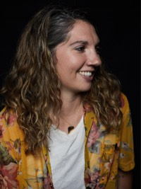
Meg ShutzerFilmmaker, panelist · 2022- Meyer ShwarzsteinFestival team · 2015
 Tiffany SiaFilmmaker, panelist · 2021
Tiffany SiaFilmmaker, panelist · 2021
 Paula Rodriguez SickertFilmmaker, panelist · 2024
Paula Rodriguez SickertFilmmaker, panelist · 2024- Clarice SilberFestival team · 2015
 Bryn SilvermanFilmmaker · 2024
Bryn SilvermanFilmmaker · 2024 Jacob SimasPanelist · 2021
Jacob SimasPanelist · 2021- David SimonModerator · 2015
 Gaia de SimoniPanelist, filmmaker · 2 editions, 2024–2025
Gaia de SimoniPanelist, filmmaker · 2 editions, 2024–2025 Robert Earl SinclairPanelist · 2 editions, 2020–2021
Robert Earl SinclairPanelist · 2 editions, 2020–2021 Joseph SingerPanelist · 2021
Joseph SingerPanelist · 2021 Gunita SinghWorkshop leader, panelist · 2 editions, 2019–2022Reporters Committee for Freedom of the Press
Gunita SinghWorkshop leader, panelist · 2 editions, 2019–2022Reporters Committee for Freedom of the Press Sky SitneyFestival team · 7 editions, 2015–2023
Sky SitneyFestival team · 7 editions, 2015–2023
- Jessica SkorichFestival team · 3 editions, 2023–2025
- Blerim SkoroFilm subject · 2024
- Amira SmajicFilm subject · 2025
- Jennifer SmartWorkshop leader · 2025
- Daniel SmithFestival team · 2015
- Edward SnowdenPanelist · 2015
 Richard Jean SoPanelist · 2021
Richard Jean SoPanelist · 2021- Jeanne SobelFestival team · 2 editions, 2015–2016
 Sonja SohnFilmmaker · 2021
Sonja SohnFilmmaker · 2021- Andalusia Knoll SoloffFilmmaker, panelist · 2019
 James SolomonPanelist · 2016
James SolomonPanelist · 2016- Tina Marie SorrowFestival team · 2019
 Ray SotoPanelist · 2021
Ray SotoPanelist · 2021 Kristal SotomayorPanelist · 2021
Kristal SotomayorPanelist · 2021
- Courtney Symone StatonPanelist · 2019
 Elyse SteinbergPanelist · 2016
Elyse SteinbergPanelist · 2016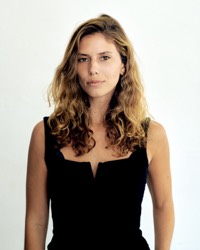
 Joe StephensPanelist · 2021
Joe StephensPanelist · 2021
- Jeffrey SterlingPanelist, workshop leader · 2019

 Flo StoneFestival team · 2015
Flo StoneFestival team · 2015- Peter H. StonePanelist · 2016
- Kate StonehillPanelist, filmmaker · 3 editions, 2022–2025
- Joel Stonington2 editions, 2018–2019
 Seth StoughtonPanelist · 2025
Seth StoughtonPanelist · 2025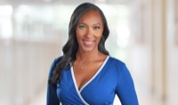
Jasmine Styles2026 Bhawin SuchakPanelist · 2021
Bhawin SuchakPanelist · 2021 Caroline SuhFilmmaker · 2023
Caroline SuhFilmmaker · 2023
 Abby SunPanelist · 2021
Abby SunPanelist · 2021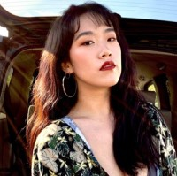

 Loralee SundraPanelist · 2021
Loralee SundraPanelist · 2021- Vera SungFilm subject · 2016
- Guillaume SuonFilmmaker · 2015
 Jankhna SuraFilmmaker · 2025
Jankhna SuraFilmmaker · 2025 Jason SussbergPanelist · 2026
Jason SussbergPanelist · 2026 David Felix SutcliffeFilmmaker, panelist · 2015
David Felix SutcliffeFilmmaker, panelist · 2015
T
- James TagerPanelist · 2020
- Jim TaglauerFestival team · 2018
- Ena TalakicFilmmaker · 2017
- Ines TalakicFilmmaker · 2017
- Gay TaleseFilm subject · 2017
 Guldana TalgatPanelist · 2021
Guldana TalgatPanelist · 2021- Paul TaylorFilmmaker · 2020
- Recy TaylorFilm subject · 2017

 Poh Si TengPanelist, workshop leader · 2 editions, 2018–2021
Poh Si TengPanelist, workshop leader · 2 editions, 2018–2021 Julien A. TerrellPanelist · 2016
Julien A. TerrellPanelist · 2016
 cai thomasFilmmaker, panelist, workshop leader · 2 editions, 2019–2023
cai thomasFilmmaker, panelist, workshop leader · 2 editions, 2019–2023- Rahsaan “New York” ThomasFilmmaker · 2023
- Shannon Thomas2026
 Melinda ThompsonFestival team · 2 editions, 2023–2024
Melinda ThompsonFestival team · 2 editions, 2023–2024 Will ThwaitesPanelist, filmmaker · 2026
Will ThwaitesPanelist, filmmaker · 2026 Chuck TobinPanelist · 2021
Chuck TobinPanelist · 2021- Barclay ToddFestival team · 2015
- Tricia ToddFilmmaker · 2017

- Laurence TophamFilmmaker · 2021

- Yatziri TovarPanelist · 2019
 Katie TownsendPanelist, workshop leader, moderator · 6 editions, 2015–2023Reporters Committee for Freedom of the Press
Katie TownsendPanelist, workshop leader, moderator · 6 editions, 2015–2023Reporters Committee for Freedom of the Press- Deanna TroustPanelist · 2025

 Duy Linh TuPanelist · 2021
Duy Linh TuPanelist · 2021- Patima TungpuchayakulFilm subject · 2018
- Mila TurajlicFilmmaker · 2017
- Marek TuszynskiPanelist · 2020
- Bernadett Tuza-RitterFilmmaker, panelist · 2018
U


V
 Brennan Vance2021
Brennan Vance2021- Marga VareaFestival team · 5 editions, 2016–2022
- Agnes Varnum2026
 Elizabeth Chai VasarhelyiPanelist · 2021
Elizabeth Chai VasarhelyiPanelist · 2021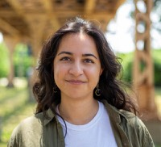
Sonam VashiPanelist · 2026 Michaela VatchevaPanelist · 2 editions, 2020–2021
Michaela VatchevaPanelist · 2 editions, 2020–2021- Michelle VaughanPanelist · 2019
 Lina VdovîiPanelist, filmmaker · 2025
Lina VdovîiPanelist, filmmaker · 2025- Rosana Hemakom VollmerhausenFestival team · 2024
- Alexandra VollreiferFestival team · 2015
W
 Amina WaheedFilmmaker · 2021
Amina WaheedFilmmaker · 2021- Jeffrey WaldronFilmmaker · 2018
 Leita WalkerPanelist · 2021
Leita WalkerPanelist · 2021

- Lisa WaltonFestival team · 2015
 Andrew WangPanelist · 2021
Andrew WangPanelist · 2021 Nanfu WangPanelist · 2 editions, 2019–2021
Nanfu WangPanelist · 2 editions, 2019–2021 Yifan WangPanelist · 2021
Yifan WangPanelist · 2021- Bea WangonduFilmmaker · 2026
 Shaina WardPanelist · 2021
Shaina WardPanelist · 2021 Lisa WarwickPanelist · 2026
Lisa WarwickPanelist · 2026
 Julia WassonFestival team · 2024
Julia WassonFestival team · 2024- Nika WatkinsFestival team · 2025
- Tennessee Jane WatsonPanelist · 2016
- Jean WehnerPanelist · 2017


- Miriam WellsPanelist · 2020
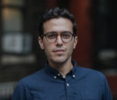
Seth Freed WesslerFilmmaker, panelist · 2021- Ty'rese WestFilm subject · 2025
 Brian WestleyPanelist · 2021
Brian WestleyPanelist · 2021
- Christina WhiteFestival team · 2015
- Ryan WhiteFilmmaker, panelist · 2 editions, 2017–2020
 Ray Whitehouse2025
Ray Whitehouse2025 Maia WiklerFilmmaker · 2026
Maia WiklerFilmmaker · 2026 Steven Leckart · Maia WiklerFilmmaker · 2026
Steven Leckart · Maia WiklerFilmmaker · 2026- John WildmanFestival team · 2022
- Travis WilkersonFilmmaker · 2017
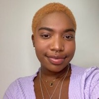
Amira WilliamsFestival team · 2022- Drew WilliamsFestival team · 2015
- Kim Williams2026
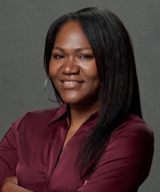
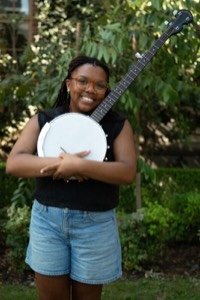
Candace WilliamsonFilmmaker · 2025- Haley WillisPanelist · 2021


- Jill Wine-BanksFilm subject · 2018
- OPENING NIGHT: United States vs. Reality WinnerFilmmaker · 2021
- Alex WinterFilmmaker, panelist · 2 editions, 2015–2018


 Annie WongFilmmaker, panelist · 2025
Annie WongFilmmaker, panelist · 2025- Anthony WonkeFilmmaker · 2024
 Marissa WoodsPanelist · 2021
Marissa WoodsPanelist · 2021
- Bob WoodwardFilm subject · 2018
 Yunbo WuPanelist · 2021
Yunbo WuPanelist · 2021
Y
 Chi-hui YangPanelist · 2021
Chi-hui YangPanelist · 2021 Olivia YarvisPanelist · 2022
Olivia YarvisPanelist · 2022- Amy YoungFestival team, moderator · 2025
- Finlay YoungPanelist · 2018
Z
- Joanna ZelmanPanelist · 2026
- Kyra ZemanickFestival team · 2018
 Blaž ZgagaPanelist · 2021
Blaž ZgagaPanelist · 2021- Zhe ZhengFestival team · 2017
- Wang ZhenxiFilm subject · 2024
- Ivory ZorichFestival team · 2 editions, 2018–2019
 Lisa ZychermanPanelist, workshop leader · 4 editions, 2018–2023Reporters Committee for Freedom of the Press
Lisa ZychermanPanelist, workshop leader · 4 editions, 2018–2023Reporters Committee for Freedom of the Press